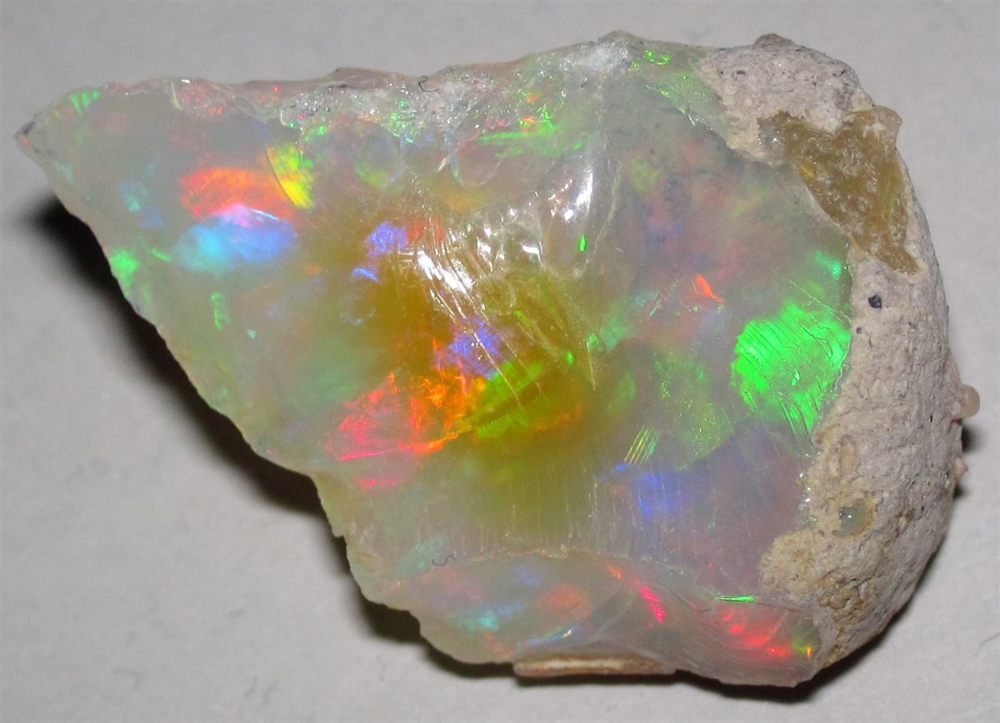

4こんなお店かもしれない
こんなお店かもしれない
カフェという業種から自然に想像できる声を、制作側が創作したものです。
以下は制作側が考えた創作のイメージ例で、実在のお客様の投稿ではありません。実際の口コミ・評価とは関係ありません。
名前の響きがやさしくて、気になっています。いつか行ってみたいな、と思っています。
まずはInstagramをのぞいてみたいです。どんなお店なのか、そこから知っていけたらうれしいです。
営業時間などが分かったら、行ってみたいです。それまでは、Instagramの更新を楽しみにしています。
